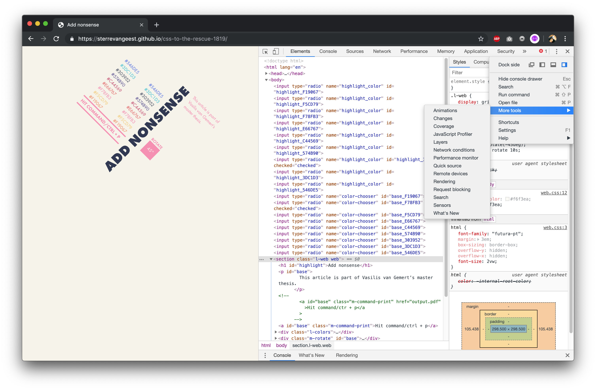

No matter the medium - Ben Marshall
Now (almost) every website is responsive, we almost forgotten printed styled sheets. But think about recipes, directions and blog posts. Not everyone has a tablet or an internet connection everywhere. Creating a print style sheet is actually quite easy. Here is how you can create a print (css) stylesheet.
To make sure your webpage will look nice when a user hits cmd/ctrl + p you have to specify some
styles with css. You can use the media query print:
@media print {
…
}
All declarations within this query will be applied to the printed version of the page. Probably a lot of elements need to be reset or styled differently so that they look normal on a sheet of paper. Even tough you want to make the printed version similar to the web version, it's easier to use this media query.
If you have a large CSS file for print you'd better create a whole new file for the print styles and define the file in the HTML like this:
Browsers will only download this file when the user starts printing.
With Chrome DevTools you can preview what the printed version will look like. When in the inspector window: choose more tools > rendering. There will appear a panel where you can change the CSS media rendering emulation to print.
Chrome shows a preview as well when you hit cmd/ctrl + p
When you open the preview for the first time (before adding any print styles) you probably will notice that some elements will be cut in the middle, and continue on the next page. Use:
p {
page-break-inside: avoid;
}
when you want to avoid the breaking of elements. Maybe you want to start some specific elements always on a new page. Then use:
section {
page-break-after: always;
}
With the @page rule you can specify dimensions and margins of a page.
@page {
size: A5; /* 148 × 210 mm */
margin: 4cm; /* use cm or in */
}
Some interactive elements will become useless once you print them on paper. You can make the content within these
elements useful again. Think about links to other pages. When printing an a element you probably lose
a lot of information. With CSS you can append a link after after the a tag using:
a[href^="http"]::after {
content: " (" attr(href) ")";
}
You can do the same for video or audio elements. Of course you can't play a video, but you can show the user the link to the webpage where they can find the video or audio.
Depending on the type of website, you could consider to hide some elements. The navigation on your webpage probably won't have any value when printing an article.
nav {
display: none;
}
Some properties like display: flex; or display: grid for your print stylesheets are not
very well supported. Even Chrome has some bugs. If you wan't to position your elements in a very specific way,
you'd better use
postion: absolute and/or postion: relative
With creating a print stylesheet you can maybe fulfill the needs of more of your website users. When making your print stylesheet, you can test what the printed version will look like. Keep in mind that not everything is supported for print.